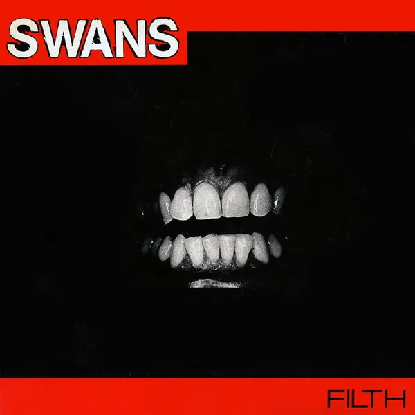

Odd Rock Blog
Quite a Collection
7/22/21: Really Gone
Tom Waits’ Real Gone, plants you in the middle of one of Waits’ most distorted and maddened world yet! This album is a hidden gem in Waits’ discography and shows the largest jump in sound and style from when he began his career in the early seventies. This album takes Lo-Fi to the next level with Waits’ shouting into a megaphone and even beatboxing throughout the album. I recommend the non-remastered release since it captures more of Waits' chaos. My favorites are Shake It and Make It Rain.
7/20/21: A Swans Classic
Swan's debut LP Filth is a metal band’s take on No-Wave. It’s a wild ride, full of loud noises, atonal guitars, and gut-wrenching vocals. The album, which is made up of nine songs is only 36 minutes but somehow feels much longer. My favorites are Weakling and Stay Here